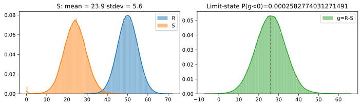
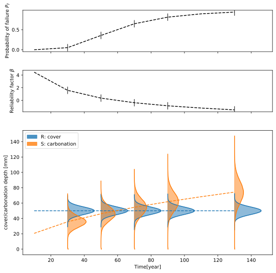

carbonation module example¶
Raw parameter data
initialize model
run model
calibrate model
[10]:
%matplotlib inline
import helper_func as hf
import numpy as np
from carbonation import Carbonation_Model, load_df_R_ACC
[4]:
# Case study
# global - Raw parameters
class Param: pass
pars = Param()
pars.cover_mean = 50 # mm
pars.cover_std = 5
pars.RH_real = 60
pars.t_c = 28
pars.x_c = 0.008 # m
pars.ToW = 2 / 52.
pars.p_SR = 0.0
pars.C_S_emi = 0.
pars.option = Param()
pars.option.choose = False
pars.option.cement_type = 'CEM_I_42.5_R+SF'
pars.option.wc_eqv = 0.6
pars.option.df_R_ACC = load_df_R_ACC()
pars.option.plot = True
# initialize model
carb_model = Carbonation_Model(pars)
# run and postproc model
carb_model.run(50)
carb_model.postproc(plot=True)
/Users/gangli/Local Documents/Mitacs project local/Tinkrete/modules/carbonation.py:281: RuntimeWarning: divide by zero encountered in power
W = (t_0 / t) ** ((p_SR * ToW) ** b_w / 2.0)
/Users/gangli/Local Documents/Mitacs project local/Tinkrete/modules/carbonation.py:76: RuntimeWarning: invalid value encountered in sqrt
) ** 0.5 * pars.W_t
Pf(g = R-S < 0) from various methods
sample count: 0.0002001220744654239
g integral: 0.00021125729406379793
R S integral: 0.0002582774031271491
beta_factor: 3.4595900423913237

[8]:
# calibration to field data
# field data: field carbonation after 20 years, mean=30, std=5
carb_depth_field = hf.Normal_custom(30, 5, n_sample=12) # mm
carb_model_cal = carb_model.calibrate(20, carb_depth_field, print_out=True)
/Users/gangli/Local Documents/Mitacs project local/Tinkrete/modules/carbonation.py:281: RuntimeWarning: divide by zero encountered in power
W = (t_0 / t) ** ((p_SR * ToW) ** b_w / 2.0)
/Users/gangli/Local Documents/Mitacs project local/Tinkrete/modules/carbonation.py:76: RuntimeWarning: invalid value encountered in sqrt
) ** 0.5 * pars.W_t
carb_depth:
model:
mean:29.108260004178188
std:6.106447400167045
field:
mean:29.079887643042
std:4.42009388341032
[15]:
# carbonation for a list of time steps
year_lis = np.arange(10,150,20)
pf_lis, beta_lis = carb_model_cal.carb_with_year(year_lis=year_lis, plot=True, amplify=200)
/Users/gangli/Local Documents/Mitacs project local/Tinkrete/modules/carbonation.py:281: RuntimeWarning: divide by zero encountered in power
W = (t_0 / t) ** ((p_SR * ToW) ** b_w / 2.0)
/Users/gangli/Local Documents/Mitacs project local/Tinkrete/modules/carbonation.py:76: RuntimeWarning: invalid value encountered in sqrt
) ** 0.5 * pars.W_t
warning: very small Pf

[179]:
# fig.savefig('RS_time_carbonation.pdf',dpi=1200)
[ ]: